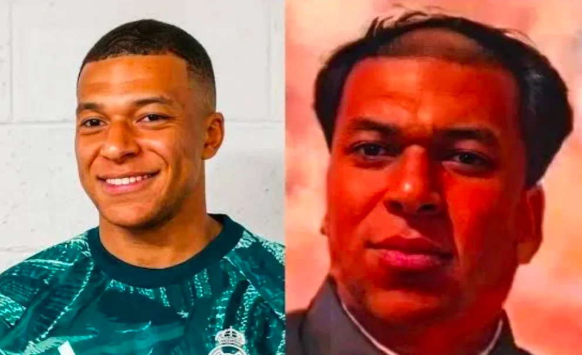

MBAPPÉ FAN SITE
Les différent événement récent à propos de Kyllian Mbappé
Les différent événement récent à propos de Kyllian Mbappé
Une vidéo diffusée en ligne montre Mbappé en train de plaisanter à propos de Mao Zedong. Elle a déclenché un boycott en Chine.
Il est accusé d'avoir offensé le « sentiment national ». Il a perdu un sponsor chinois à cause de ce qu'on a appelé une « mauvaise blague ».
Malgré ses excuses, il reste très critiqué en Chine.
Le Real Madrid a présenté ses excuses à son tour. D'importantes conséquences financières sont évoquées pour le club et pour le joueur. ici
26/10/2026
